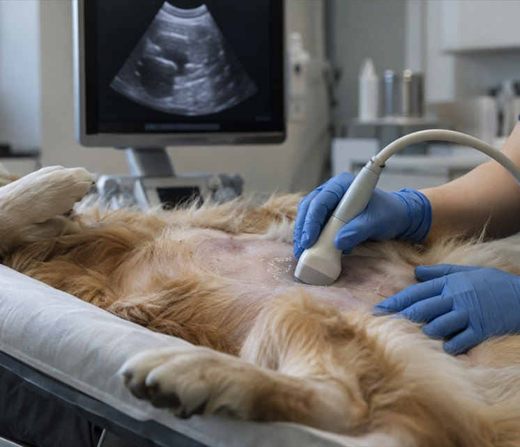
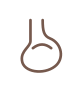

Internal Medicine Center
내과센터
thoughtful and appropriate treatment. "
Internal
내과센터 .
내과센터
최적의 치료 방법을 적용하기 위해 힘쓰고 있습니다.

내과센터
동물병원에서 면밀한 질환 파악이 어려운 반려동물들을 풍부한 경험과 실력을 갖춘 내과 전담 의료진이 체계적인 진단검사 시스템을 거쳐 면밀하게 진단합니다.
특히 노령성 · 만성 · 난치성 중증 질환으로 고통받는 반려동물과에게 '최선의 치료'를 실시하고 있으며, 국내외 유수의 진단 기관들과의 협력체계, 무엇보다 반려동물 데이터와 축적된 진료 경험과 꾸준한 노력을 거쳐 질병의 원인을 규명하고 치료 방법을 적용하기 위해 힘쓰고 있습니다.
진료과목
-
내분비내과
췌장, 부신, 갑상선, 부갑상선 등 장기 이상으로 발생하는 내분비(호르몬) 질환이 반려동물 사이에서 꾸준히 증가하고 있습니다.
온율담 내분비내과에서는 호르몬 검사 등을 거쳐 면밀한 진단을 위해 힘쓰고 있습니다. -
소화기내과
소화기내과에서는 급 · 만성의 구토, 설사, 식욕부진, 복부팽만, 복통 등의 소화기 증상을 보이는 반려동물에게 분변검사, 혈액 · 혈청화학검사 및 X-ray, 초음파와 같은 영상검사 등 기본적인 검사를 실시하여 증상의 유발원인을 면밀하게 찾아 치료합니다.
반려동물에 따라 췌장염 / 염증성 장질환 등에 대한 특수화학검사 및 감염성 질환에 대한 면역화학/PCR검사 등을 추가적으로 실시하게 됩니다.
또한 정밀 디지털 내시경과 복강경을 이용하여 상하부 소화기 내부 상태 확인 및 세포 · 조직검사, 이물제거, 헬리코박터 검사, 식도 협착에 대한 baloon dilatation 등을 실시하고 있습니다. -

종양내과
종양내과에서는 진단 세포 검사, 조직 검사, 면역염색 외에도 X-ray / 초음파 / CT 및 MRI 등의 영상검사를 실시하여 종양의 유래/종류/전이상태 및 병기를 면밀히 평가한 후 반려동물의 건강 상태를 감안하여 가장 적합한 치료를 선택해 시행하고 있습니다.
종양 제거 수술, 항암치료, 표적약물치료, 면역치료 등을 거쳐 종양으로 고통받는 반려동물과 보호자가 더 나은 삶의 질을 유지할 수 있도록 힘쓰고 있습니다. -
순환기내과
순환기내과에서는 동맥관개존증, 폐동맥 · 대동맥판막 협착증, 방실기형, 혈관기형과 같은 선천적인 심장질환과 만성 판막질환, 비대성 · 확장성 심근병증, 폐고혈압, 심장사상충증, 부정맥 등의 후천성 심장질환에 대한 진단을 위해 흉부방사선, 심장초음파 검사, 심장 바이오마커 검사, 심전도 검사, 기관지 내시경, 투시검사, CT촬영, 혈관조영술 등의 정밀 진단 기법을 활용하고 있습니다.
진단 후에는 반려동물과 보호자의 상황을 고려한 종합적인 맞춤 치료계획을 수립하여 약물치료, 수술 또는 중재적 시술을 거쳐 환자와 보호자가 더 나은 삶의 질을 유지할 수 있도록 온 힘을 기울이고 있습니다. -
신경내과
경련, 발작, 마비, 선회, 운동실조 등의 신경증상을 보이는 반려동물에 대해서 전반적인 스크리닝 검사와 신경계 검사를 진행하여 문제가 있는 부위를 찾은 후 의심부위에 대한 CT/MRI 촬영 및 뇌척수액(CSF)에 대한 세포학 검사, 단백질 정량검사, 항체가 검사, 배양 검사 및 PCR 검사를 실시하여 면밀한 발병원인을 찾아 근본 원인을 진료하고 있습니다.
놔와 척수 등의 중추 신경계 질환으로부터 다양한 말초 신경 질환들에 이르기까지
폭넓은 임상경험을 바탕으로 최선의 치료 결과를 드리기 위해 힘쓰고 있습니다. -
혈액내과
빈혈, 혈소판감소증, 응고 장애를 보이는 반려동물들에 대해서 혈액 · 혈청화학검사, 빈혈 재생성 평가, 응고계 검사, 혈전 검사, 트롬보엘라스토그램(TEG), 혈구 · 골수세포학 검사 등을 실시하여 면밀한 원인을 진단합니다.
특히 다양한 혈액 감염체에 대한 PCR 검사, 다양한 선 · 후천적 응고장애에 대한 응고인자 검사 및 유전자 검사뿐만 아니라 백혈병 등에 대한 골수 검사까지 실시하여 보다 면밀한 원인을 찾아 진료하고 있습니다. 국내 유일의 동물혈액은행과 연계하여 안전한 혈액 전용 보관 시스템을 구축하고 있어 위중한 반려동물들에게 상시 응급 수혈 및 다양한 성분 수혈 치료가 할 수 있습니다.